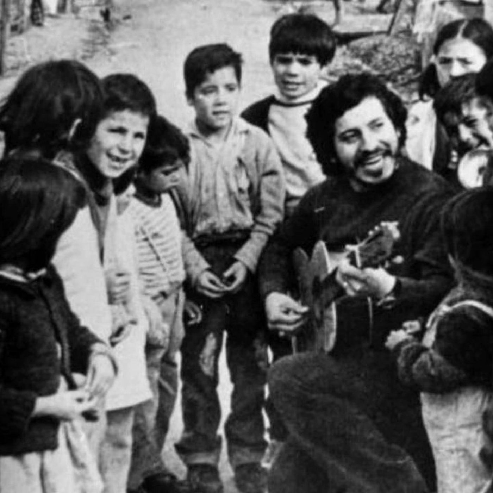

El Legado que Nos Mueve
Amor popular, trabajo de masas con las niñeces y la lucha que no se rinde.
El Legado: Sembrar el futuro en la arcilla de la infancia
Hablar del legado no es mirar las páginas de la historia como si fueran un museo de nostalgia. El legado es una antorcha encendida que se pasa de mano en mano, y su fuego solo sobrevive si somos capaces de traspasarlo a quienes vienen detrás. La historia de nuestra población, la obra de fundadores y militantes territoriales como el Jano, y la lucha de los grandes referentes de la izquierda social y política, convergen en una sola verdad histórica y empírica: el futuro de un pueblo se define en el territorio y en la mente de sus infancias.
Las infancias no son el mañana; son el presente que debemos cuidar y acompañar hoy, entregándoles las herramientas críticas necesarias en la edad donde más lo necesitan. El sistema lo sabe, y por eso intenta domesticarlos desde pequeños a través del individualismo y el consumo. Nuestra tarea, por tanto, es de trinchera: disputarle las infancias al sometimiento para formar los adultos conscientes del mañana.
Este es el hilo conductor que une a quienes nos enseñaron a caminar:
1. El Che Guevara: El revolucionario se forja desde la niñez
El pensamiento de Ernesto "Che" Guevara nos recuerda que la conciencia social no aparece de la noche a la mañana en la adultez; se cultiva desde los primeros años a través del ejemplo, el estudio y el lazo comunitario. El Che planteaba que la construcción de una sociedad nueva requiere transformar al ser humano desde su raíz más tierna, moldeando la arcilla en una dirección solidaria y no egoísta.
"La arcilla fundamental de nuestra obra es la juventud, en ella depositamos nuestra esperanza y la preparamos para tomar de nuestras manos la bandera."
— Ernesto "Che" Guevara
2. Salvador Allende: Los niños como los únicos privilegiados
El compañero presidente Salvador Allende comprendió como nadie que un proyecto socialista y humano debe tener como prioridad absoluta la protección material y mental de la niñez. Para Allende, la infancia no era una etapa de espera, sino el núcleo donde se fundaba la dignidad de la patria nueva. Si un niño crece con desnutrición, abandono o falta de educación crítica, el futuro de la revolución está hipotecado.
"Para nosotros, el niño es la razón de ser de la vida, el niño es la semilla que hay que abonar... Queremos que el niño sea el centro de la preocupación del Estado, porque un pueblo que no cuida a sus niños no tiene derecho al futuro."
— Salvador Allende
3. Víctor Jara y Violeta Parra: El canto popular como escuela de conciencia
La cultura popular y la militancia de Víctor Jara y Violeta Parra no se quedaron en los grandes escenarios; bajaron a la tierra, a las poblaciones y a las escuelas populares. Ellos entendieron que a las infancias se les entrega compañía y valores a través de la identidad, el juego y el arte. Un niño que canta la historia de su pueblo y comprende la realidad de su clase social crece con un escudo indestructible contra la alienación.
"Nuestra canción no es una canción de protesta por la protesta misma, es una canción que quiere sembrar en los niños una semilla de amor y de dignidad, para que crezcan sabiendo quiénes son y de dónde vienen."
— Víctor Jara
4. Gladys Marín y la Comandante Tamara: El amor como motor de la militancia
Tanto Gladys Marín como Cecilia Magni, la Comandante Tamara, demostraron con su consecuencia total que la vida del militante de izquierda está atravesada por un amor desbordante hacia los desposeídos y por la urgencia de proteger a los hijos del pueblo.
Gladys Marín dedicó gran parte de su labor política a denunciar cómo el sistema precarizaba la vida de los niños en las poblaciones y defendió siempre que la transformación social se hace con ternura, pero con firmeza combativa:
"La vida es hermosa, pero vale la pena si se vive con dignidad, si se lucha por los demás, si se tiene la capacidad de indignarse ante la injusticia y de amar profundamente a los niños y al pueblo."
— Gladys Marín
Por su parte, Cecilia Magni encarnó el dolor y la convicción de una madre revolucionaria que entendió que para asegurar un futuro libre para su propia hija y para todas las infancias del país, era necesario arriesgarlo todo en el presente. Su entrega total nació del amor más profundo por el destino de su clase.
El legado que ellas nos dejan es el de la urgencia de retomar los trabajos de masas en las poblaciones. Educar a los niños en colectividad, enseñarles a compartir, a ser solidarios con el vecino y a cuestionar la injusticia es el verdadero trabajo de base que el fascismo tanto teme.
La evidencia viva de la semilla
El sentido profundo de esta sección, y de todo este archivo vivo, es demostrar que esta teoría funciona. Cuando hombres como el Jano y las organizaciones sociales de la población dedicaron su vida, sus carreras, su tiempo y su inmenso amor a trabajar con los niños de la sede, a abrirles las puertas del ciber, a enseñarles arte, deporte y pensamiento crítico, no estaban perdiendo el tiempo: estaban sembrando.
Los adultos conscientes, los profesionales al servicio del pueblo, los vecinos organizados y los estudiantes críticos que hoy defienden la dignidad del territorio son el resultado empírico de esa semilla plantada hace décadas. El trabajo con las infancias da frutos de conciencia social.
Retomar esa labor en los territorios no es una opción; es un deber histórico para que, más pronto que tarde, de nuevo se abran los caminos de la libertad.

Es imposible hablar de amor popular sin recordar las manos curtidas y la voz inmortal de Víctor Jara. Cuando cantaba "El amor es algo grande que no se puede medir", no hablaba de un amor romántico y burgués: hablaba del amor que mueve a un poblador a compartir su última comida, del amor que lleva a un joven a tomar un micrófono para denunciar la injusticia, del amor que sostiene a una madre en la fila de la olla común.
Por eso sus canciones "Te recuerdo Amanda" y "Plegaria a un labrador" resuenan en cada rincón de La Goya, porque cantan al amor que lucha, al amor que no se rinde, al amor que construye territorio. Víctor lo dijo claro:
"Cómo luchar por la vida, si no es por la vida misma.
Cómo luchar por la paz, si no es en la tierra misma.
Cómo luchar por el amor, si no es con amor."
Ese es el mandato que nos dejaron: continuar la lucha, resistir en el territorio, y retomar con urgencia el trabajo de masas con nuestras infancias, porque allí está la semilla de la dignidad. No hay camino más corto hacia la liberación que el que se construye hombro con hombro, codo con codo, amando al pueblo como se ama la vida misma.